请问松月二打这个6如何杀，黑能必胜吗？
首页
习题专区
#1 请问松月二打这个6如何杀，黑能必胜吗？ 作者：空恨社小仙 发表时间：2012-2-1 16:18:28
［ 快乐天羽 于 2012-2-29 0:11:57 时奖励此帖[金币加 100 威望加1］
#2 Re:请问松月二打这个6如何杀，黑能必胜吗？ 作者：虎哥 发表时间：2012-2-1 22:00:08
还原为三打必胜
#3 Re:请问松月二打这个6如何杀，黑能必胜吗？ 作者：潇洒 发表时间：2012-2-2 0:29:32
还原后有盘端问题吗？
#4 Re:Re:请问松月二打这个6如何杀，黑能必胜吗？ 作者：空恨社小仙 发表时间：2012-2-2 8:04:38
三打必胜棋型的确一样，但我记得这一路变化一直杀到盘端边角才将其中最强的几个防点杀掉，我来拆拆看是否有盘端问题，如有盘端问题我再发贴求教，请虎兄继续关注本贴。 谢谢虎兄！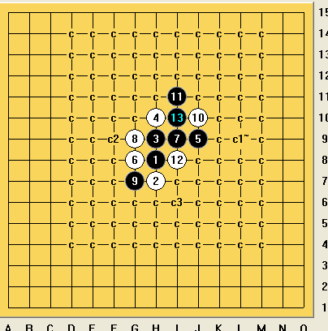
谢谢虎兄！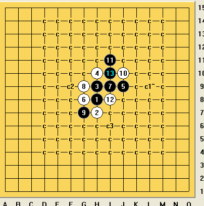［此帖子已被 空恨社小仙 在 2012-2-2 8:06:15 编辑过］
#5 Re:Re:请问松月二打这个6如何杀，黑能必胜吗？ 作者：空恨社小仙 发表时间：2012-2-2 8:21:53
这路变化黑下面的空间不够，无法跟三打那样杀棋。。。。求指点。。
#6 Re:请问松月二打这个6如何杀，黑能必胜吗？ 作者：空恨社小仙 发表时间：2012-2-2 8:38:18
也就是因为很多人告诉我这个六通三打杀，但我就是杀不完，因此求助爱棋网，希望得到高人的帮助，至少拆出一个不能相通的道理。。。要不然松二大定不成立，至少六手不唯一！
#7 Re:请问松月二打这个6如何杀，黑能必胜吗？ 作者：t周 发表时间：2012-2-2 9:28:45
#8 Re:Re:请问松月二打这个6如何杀，黑能必胜吗？ 作者：空恨社小仙 发表时间：2012-2-2 9:39:37
嗯，这个活三也有盘端问题，黑防上防下都杀不掉，黑防上，这个16确实是唯一。。。14手我杀不出来的一共三个，都不能照三打那样杀，各自有各自的盘端问题，另外这个6我拆了一下，觉得这样黑也有胜的希望，就是太墨迹了，不知道有没人拆过？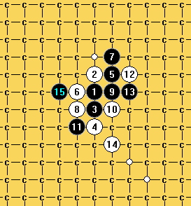［此帖子已被 空恨社小仙 在 2012-2-2 9:45:00 编辑过］
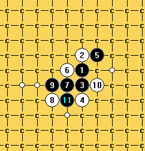［此帖子已被 空恨社小仙 在 2012-2-2 9:49:43 编辑过］
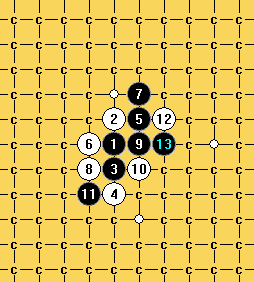［此帖子已被 空恨社小仙 在 2012-2-2 9:50:11 编辑过］
［ 快乐天羽 于 2012-2-29 12:46:52 时奖励此帖[金币加 100 威望加1］
#9 Re:请问松月二打这个6如何杀，黑能必胜吗？ 作者：t周 发表时间：2012-2-2 10:44:58
#10 Re:请问松月二打这个6如何杀，黑能必胜吗？ 作者：sonix 发表时间：2012-2-2 12:06:55
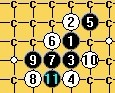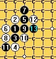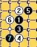
杀不掉
#11 Re:请问松月二打这个6如何杀，黑能必胜吗？ 作者：sonix 发表时间：2012-2-2 12:08:53
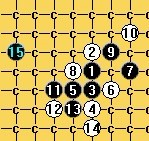
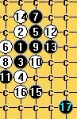
#12 Re:Re:请问松月二打这个6如何杀，黑能必胜吗？ 作者：空恨社小仙 发表时间：2012-2-2 14:31:03
 14.rar
14.rar
#13 Re:Re:请问松月二打这个6如何杀，黑能必胜吗？ 作者：空恨社小仙 发表时间：2012-2-2 15:09:41
11L的高人朋友，能分享一下这路变化的分枝谱吗？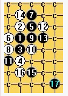
#14 Re:请问松月二打这个6如何杀，黑能必胜吗？ 作者：砍 发表时间：2012-2-2 22:45:31
俞大师威武
#15 Re:请问松月二打这个6如何杀，黑能必胜吗？ 作者：游戏人间 发表时间：2012-2-2 23:24:06
简单必胜 ［ 空恨社小仙 于 2012-2-3 8:47:48 时花20金币送鲜花一朵］
#16 Re:Re:请问松月二打这个6如何杀，黑能必胜吗？ 作者：空恨社小仙 发表时间：2012-2-3 8:47:23

#17 Re:Re:请问松月二打这个6如何杀，黑能必胜吗？ 作者：空恨社小仙 发表时间：2012-2-3 8:54:05
可是6手下面那个8如何才能杀掉呢？
#18 Re:Re:Re:无敌大师简单必胜 作者：空恨社小仙 发表时间：2012-2-3 9:21:01
8走6下面不是跟斜月三打那路很强的变化相通吗？难道能终结掉？？？［此帖子已被 空恨社小仙 在 2012-2-3 9:24:41 编辑过］
#19 Re:Re:Re:Re:无敌大师简单必胜 作者：空恨社小仙 发表时间：2012-2-3 12:11:38
唯一杀不出来的，跪求大师们指点。。。
#20 Re:请问松月二打这个6如何杀，黑能必胜吗？ 作者：游戏人间 发表时间：2012-2-3 15:23:34
地毯没做过。不过印象中这个以前拆过后来因为这个7彻底放弃了。黑完全不需要攻，套外围防着下就可以了。。
#21 Re:请问松月二打这个6如何杀，黑能必胜吗？ 作者：砍 发表时间：2012-2-3 17:50:10
 其实我疏星地毯了，只要白棋胡乱下。后来我就觉得没意义最后我也放弃了。
其实我疏星地毯了，只要白棋胡乱下。后来我就觉得没意义最后我也放弃了。
#22 Re:请问松月二打这个6如何杀，黑能必胜吗？ 作者：屏蔽 发表时间：2012-2-3 20:58:34
 实战棋手谈地毯有两种层次，一是概念上的控制型地毯，搁实战很容易必胜；二是完整意义上的地毯，为了比赛不出漏洞或使用骗着而完整做出。大家应该注意区分下。网络棋手谈地毯时的层次，通常远高于前者而略低于后者。
实战棋手谈地毯有两种层次，一是概念上的控制型地毯，搁实战很容易必胜；二是完整意义上的地毯，为了比赛不出漏洞或使用骗着而完整做出。大家应该注意区分下。网络棋手谈地毯时的层次，通常远高于前者而略低于后者。
#23 Re:请问松月二打这个6如何杀，黑能必胜吗？ 作者：游戏人间 发表时间：2012-2-3 22:21:42
这东西白怎么防啊。。。
#24 Re:请问松月二打这个6如何杀，黑能必胜吗？ 作者：砍 发表时间：2012-2-3 22:22:53
放在A1
#25 Re:Re:请问松月二打这个6如何杀，黑能必胜吗？ 作者：空恨社小仙 发表时间：2012-2-3 22:24:59
#26 Re:请问松月二打这个6如何杀，黑能必胜吗？ 作者：t周 发表时间：2012-12-11 9:07:05
?
#27 Re:请问松月二打这个6如何杀，黑能必胜吗？ 作者：小帮帮 发表时间：2012-12-17 23:10:42
回复5楼，这个17可以杀。
#28 Re:请问松月二打这个6如何杀，黑能必胜吗？ 作者：渔家问道 发表时间：2014-2-27 21:06:58
h8h9h7h6i9g8i10g7i8g6g5f8i6i7e9f7f6e8d9d7
#29 Re:请问松月二打这个6如何杀，黑能必胜吗？ 作者：自来水 发表时间：2014-4-29 21:51:24
27楼走法比较吊
#30 Re:请问松月二打这个6如何杀，黑能必胜吗？ 作者：棋元道 发表时间：2014-5-1 14:01:02